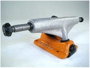

滑板桥，上面装有轮子，是你的滑板上最耐久的部件。你可以用它在各种表面上做 grind. 它们使你可以转弯。现在你知道它们很重要了吧，我们来看一看桥的构成：它是由轴套/轴，桥主钉，轴衬和基盘构成的。
基盘(baseplate)就是固定在板面上的那个部分，从基盘穿过一根很粗的螺丝钉就叫主钉(kingpin)，你可以调节主钉的松紧来控制桥的灵活性。主钉就是整个桥上最容易损坏的部分，但是这是可以更换的部件。主钉上面就是轴衬(bushing)，每个桥上都有一大一小两个轴衬，它们有不同的硬度。随着你的使用和“虐待”，它们会破裂，之后你的桥就不能被拧紧了。幸运的是，很多桥的厂家都提供替换的轴衬，有不同的硬度可供选择。
桥的一个问题就是“滑轴”(axle slip)，这种事情会在你做翻板动作落地时板子侧面着地，轴与地面垂直(术语叫primo)时发生。轴在轴套里滑动，使得一边轮子很紧，一边轮子很松。一般处理这种情况的办法就是把板子往相反的方向再 primo 一次，但是可想而知，长久这样滑轴的问题只会越来越厉害。很多公司声称它们的桥是 “antislip” 的，你可以试一试。
不要听别人说桥是紧的好还是松的好。这完全取决于你的喜好。松的桥容易转弯，紧的桥更加稳定。你也可以把后面的桥稍微拧紧一些，这样 ollie 更加稳定。
当然，选择桥的另一个方面就是重量。没有人想要很重的桥……喂，有人想要吗？……没有就好，呵呵。一些公司想方设法减少桥的重量，同时保持坚固。GrindKing 和 Thunders 是比较轻的，然而 Independent 和 Destroyer 是比较重的。
桥有不同的宽度。太宽的桥装在你的板子上，看起来就像一个海龟，翻板的时候桥会碰到你的脚；太窄的桥让你滑行的时候看不到轮子。选择宽度的一个原则就是装上桥之后，把板子侧面立起来，能够基本垂直的放在地面上。这样你可以做 railflip 之类的动作。